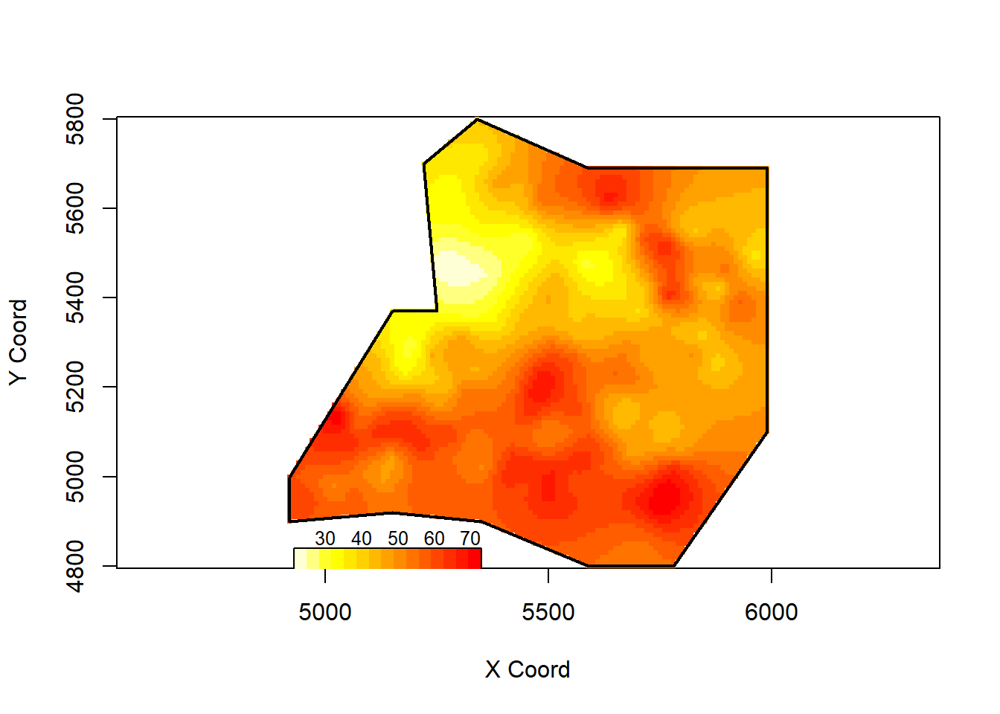
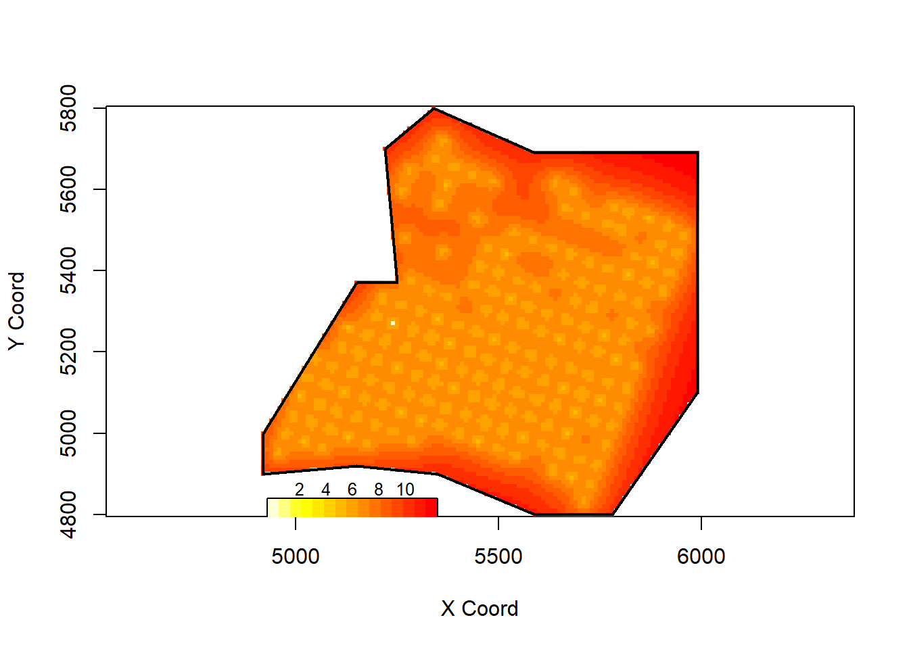

Week 8: Geostatistics
1 Soil Data & Variogram
1.1 Soil Example
- Background details: Example 1.4 of MBG 1.1
- calcium content in soil
- three sub-regions: different soil management regimes.
library(geoR)
data(ca20)
points(ca20,cex.min = 0.2, cex.max = 1.5, pch = 21)
1.2 Variogram
plot(variog(ca20, option="bin", max.dist=510),
xlab = "h", ylab = "gamma(h)")## variog: computing omnidirectional variogram
Variogram argument
- Function: variog
- argument
- opition: “bin”
- max.dist: maximum distance for the variogram
2 MLE
2.1 MLE: Initial Value
“Eye-fit”
plot(variog(ca20, option="bin", max.dist=510),
xlab = "h", ylab = "gamma(h)")
lines.variomodel(seq(0, 510, l = 100),
cov.pars = c(100, 120),
cov.model = "mat", kap = 0.5, nug = 30)
2.2 MLE: Function
# trend - constant mean
m1 = likfit(ca20, ini = c(100, 120), nug = 30)
summary(m1)- Results of output
- Spatial-dependence parameter estiamtes: \((\sigma^2, \phi, \tau^2)\)
- no standard error is provided.
- cov.pars: \((\sigma^2, \phi)\)
- nugget: \(\tau^2\)
- kappa
The output of MLE
# cov.pars
m1$cov.pars
# partial sill
m1$sigmasq
m1$phi
# nugget
m1$nugget## [1] 135.1726 159.4883
## [1] 135.1726
## [1] 159.4883
## [1] 16.76523- The arguments of function likfit
- argument
- cov.model: “exp” (default), more options see cov.pars
- Fixed or Estimated: fix.nugget = FALSE, fix.kappa = TRUE, kappa =0.5
- Initial value: ini.cov.pars, nugget = 0
- Remarks: we have 4 parameters: nugget \(\tau^2\), partial sill \(\sigma^2\), range parameter \(\phi\), smooth parameter \(\kappa\) ( \(\nu\) in our slide. )
- Function allow us either to pre-specify (fix) or estiamte it
- PS: most of the time, \(\kappa\) is fixed.
Here are some exmaple:
- Example 1: no specification. “likfit(ca20, ini = c(100, 200), nug = 50)”
- Exp model (\(\kappa\) = 0.5 fixed).
- To estimate: \(\tau^2\), \(\sigma^2\), \(\phi\)
- Example 2: no specification. “likfit(ca20, ini = c(100, 200), nug = 50, fix.nugget=TRUE)”
- Fixed: \(\kappa\) = 0.5, nugget \(\tau^2 = 50\)
- To estiamte: \(\sigma^2\), \(\phi\)
2.3 Spatial Trend
2.3.1 Two ways
- Specify directly in function like “likfit”:
fit = likfit(ca20, ini = c(100, 60), trend = ~altitude) - Specify it through function “trend.spatial”: See below
- Usage: only to specify, not computing involved in this function.
trend.spatial(trend, geodata)
- Argument trend
- trend = “cte”: constant mean
- trend = ~altitude: \(\mu(s)=\beta_0+\beta_1 altitude\)
- Other options: “1st”, “2nd”, see help files for more details
3 Geodata format
The package geoR requires geodata object, and in this part, we show how to create geodata object
- geodata object: a list with two obligatory components
- coords: a matrix with the two-dimensional coordinates of the sampling locations
- data: a vector (vectors) giving the corresponding measured value(s) at each of sampling location.
3.1 Create geodata
- convert a data.frame to geodata
- as.geodata(obj, coords.col = 1:2, data.col = 3, covar.col = NULL, covar.names = “obj.names”)
library(geoR)
data(camg) # data.frame format
# geodata format
geocamg = as.geodata(camg, data.col=5, covar.col=c(3,6),
covar.names = c("elevation", "mg20")) - Argument
- obj: data.frame
- Z: data.col=3
- X: covar.col
- covar.names =
- Many functions in geoR requires geodata format
4 Kriging
4.1 Two key functions:
- krige.control: specify the parameter for kriging, no computing involved.
- krige.conv: to compute
- Usage
- krige.control(type.krige = “ok”, obj.model = NULL)
- Type of krige: “sk”, “ok” (default)
- obj.model: typically an output of likefit
- Usage
- krige.conv(geodata, locations, krige)
- geodata
- locations: \(\mathbf s_0\), data.frame, multiple locations.
- krige: output of krige.control.
4.2 Ordinary Kriging
fit = likfit(ca20, ini = c(100, 60), trend = "cte")
gr = pred_grid(ca20$borders, by = 10) # new locations s_0 created.
KC = krige.control(obj.model = fit)
ca20pred = krige.conv(ca20, loc = gr, krige = KC)Kriging Estimates
ca20pred$predict[1:3]
color = function(x)rev(heat.colors(x))
image(ca20pred, loc = gr, x.leg = c(4930, 5350)
, y.leg = c(4790, 4840), col=color(15))
## [1] 55.01889 54.80726 54.58205Kriging Variances
ca20pred$krige.var[1:3]
image(ca20pred, loc = gr, val=sqrt(ca20pred$krige.var)
, x.leg = c(4930, 5350), y.leg = c(4790, 4840)
, col=color(15))
## [1] 111.9307 109.3888 106.5897Kriging weights
coords = cbind(c(0.2, 0.25, 0.6, 0.7),
c(0.1, 0.8, 0.9, 0.3)) # data
KC = krige.control(ty = "ok", cov.model = "mat",
kap = 1.5, nug = 0.1,
cov.pars = c(1, 0.1)) # model parameter
# Weights
krweights(coords, c(0.5, 0.5), KC) ## [1] 0.1935404 0.2301559 0.2125838 0.3637199Convert to SpatialPointsDataFrame
library(sp)
gr0 = polygrid(gr, borders = ca20$border, bound = T)
capred = data.frame(gr0, ypred=ca20pred$predict)
coordinates(capred) = ~ Var1 + Var2
class(capred) ## [1] "SpatialPointsDataFrame"
## attr(,"package")
## [1] "sp"We can visualize using all functions related to SpatialPoints.
4.3 Universal Kriging
Both ordinary kriging and universal kriging using setting type.krige = “ok”. Once you put the trend in, the function will distinguish two types of kriging.
4.3.1 Universal Kriging: Polynomial of coordinates
- We need to provide \(x_1(\mathbf s_0), \ldots, x_p(\mathbf s_0)\) for the function
- in function krige.control
- trend.d: specify data trend
- trend.l: specify prediction trend
Work with polynomial.
fit = likfit(ca20, ini = c(100, 60), trend = "1st")
gr = pred_grid(ca20$borders, by = 10)
KC = krige.control(obj.model = fit, trend.l="1st",
trend.d="1st")
ca20pred = krige.conv(ca20, loc = gr, krige = KC)4.3.2 Universal Kriging: covariates
fit2 = likfit(ca20, ini = c(100, 60), trend = ~altitude)
gr = pred_grid(ca20$borders, by = 10)
graltitude = rnorm(10908,mean=5.5)
KC2 = krige.control(type.krige = "ok", obj.model=fit2,
trend.d=~altitude, trend.l=~graltitude)
ca20pred2 = krige.conv(ca20, loc = gr, krige = KC2)In universal kriging, we need to know \(x(\mathbf s_0)\). In the above code, I randomly generated \(x(\mathbf s_0)\) from graltitude = rnorm(10908,mean=5.5). In practice, you shall know \(x(\mathbf s_0)\) in advance.